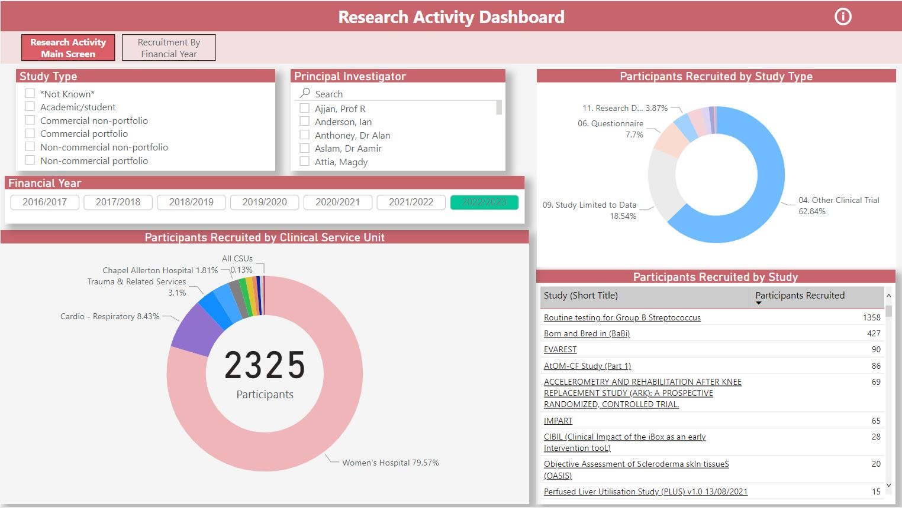
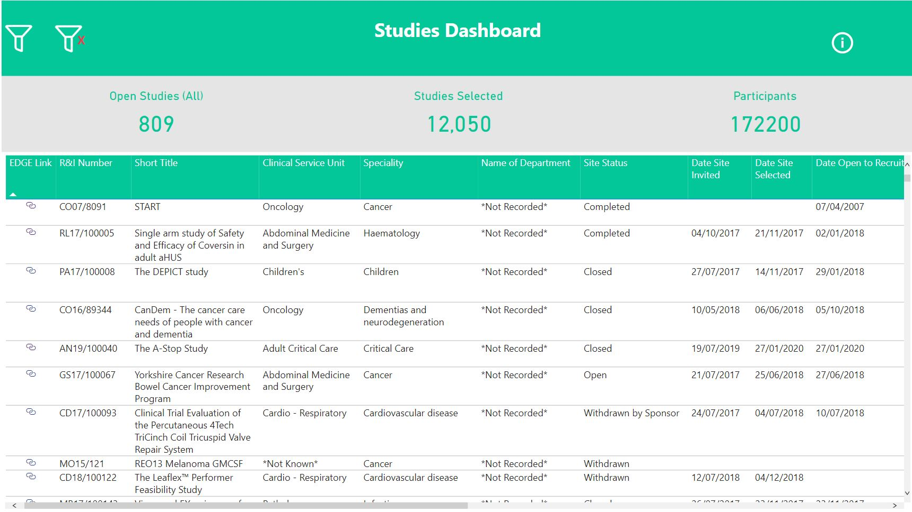
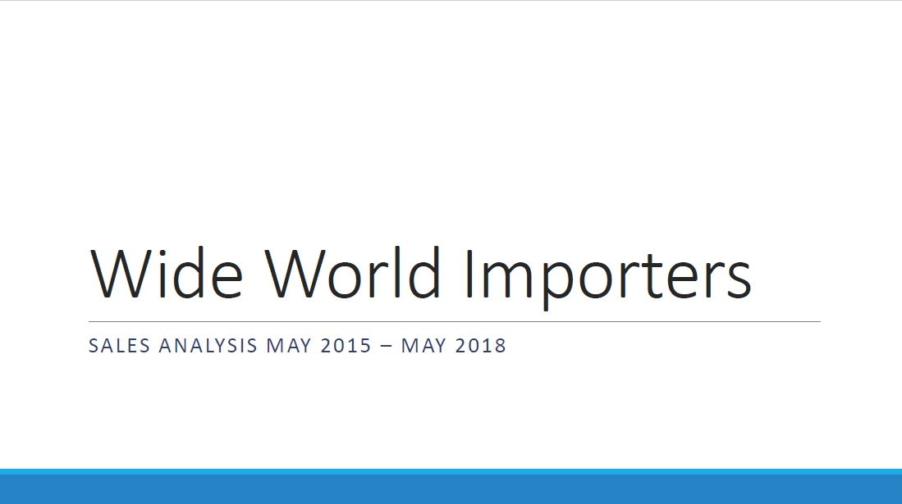
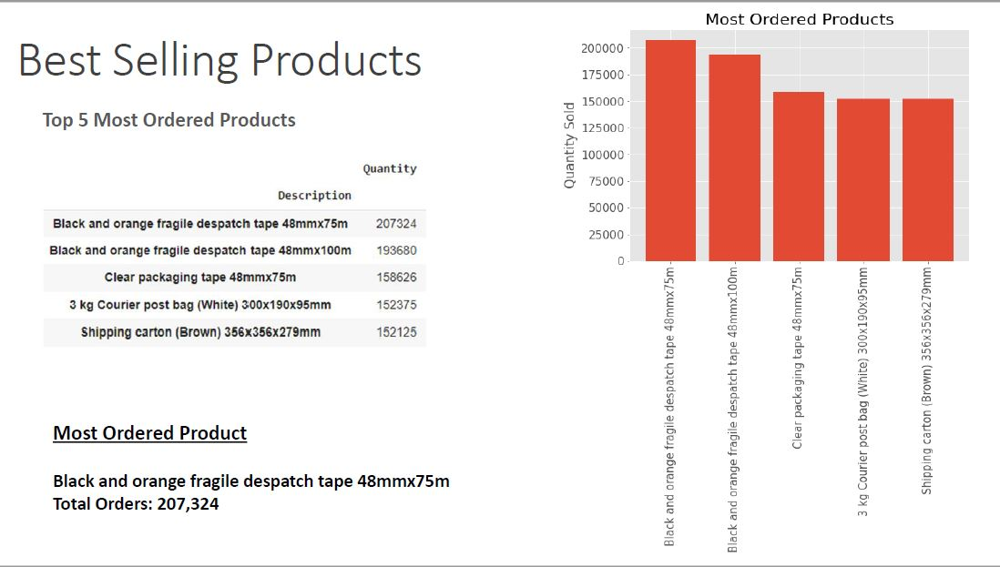

This dashboard can be used to view study participant activity from 2016 onwards.
Filters can be applied to select studies by Principal Investigator, Department/CSU and
Financial Year to meet research delivery teams reporting requirements.
Features of the dashboard include interactive charts/tables and study related filters to retrieve specific study recruitment metrics.
Buttons to navigate to additional pages, and an information section with a tutorial to be added soon.
The data used for this dashboard has been extracted from EDGE, a research management
system and transformed within SQL Server.


This dashboard can be used to generate quick lists of studies to meet various different reporting
requirements from research delivery teams.
Features of the dasboard include a filter and clear buttons, an information section, a tutorial is to be added soon.
The data used for this dashboard has been extracted from EDGE, a research management
system and transformed within SQL Server.


As part of my Data Science Apprenticeship, I was provided with historic sales data from an online retailer and was tasked to provide analysis and a presentation from the data.
KPI's within my analysis include:
Most and least sold products(identifying price points of these deliverables).
Most and least profitable products(identifying price points of these deliverables).
Visualising monthly and yearly sales trends.
Analysing revenue percentage change by month and year.
Forecasting future sales using the Holt-Winter model.
I used Google Collabs within this project for data analysis, visualisations, forecasting and linear regression.
The final presentation can be viewed as a pdf and the datasets and Collab notebooks are available within my GitHub.
LTHT Research & Innovation study overview and staff performance
exploration in PowerBI using a variety of data visualisations.
KPI's include:
Studies opened by team member
Days taken to open a study
Number of studies allocated to a team member

Covid-19 Analysis (2020-2022) for Leeds Teaching Hospitals. The analysis looks
at key demographics of patient data using foundational to advanced SQL
Server skills, data transformation and data cleaning practices.
Using LTHT Covid-19 patient demographics analysis(2020-2022), I have
created a multi-page dashboard within Tableau to visualise:
Admissions/Deaths by Postcode
Admissions/Deaths by Age
Admissions/Deaths by Ethnicity
Admissions/Deaths by Gender
I conduct a T-test within Excel to find if LTHT Covid-19 death
age ranges are in line with the UK Covid-19 mean death range of 80.
I extract the LTHT data using SQL Server, using techniques to generate
a random sample of age ranges from 2020-2022.

This project aims to automate the Research & Innovation daily work
processes. This app takes user input and attachments in order to
our email our stakeholders study amendment confirmations, this
task at present is completed manually and our team process around
20 per day. The application automates this task, eliminating error and
makes the overall process to completion quicker.
The application is built in Python, using the library Tkinter for the
user interface.
Within R&I, our team are often asked by internal and external
stakeholders how long a study will take to open once in setup.
Study timelines are dependent upon a number of
variables from the approvals associated with a study that require reviewed
by clinical leads, to the pro-activeness of the
team leading on the study. The timeline can take 2 month to over a
year dependent on the variables described. I comprised open study
data from two research systems used at LTHT; OneForm to gather study
approval metrics and EDGE to retrieve study information asociated
with the approval metrics. I amalgamated the two datasets within
SQL Server.
Using this data I was able to develop a Machine
Learning model within Google Collabs to predict the
timeline of a study based on the variables a user
inputs; Clinical Service Unit(A&E, Cancer, Radiology etc), the
number of clinical approvals required, type of study(PHD, internal
study, external commerical study).
A user interface for the ML Model was built
using the Python library Streamlit. The app is hosted on a Heroku
webserver so that members of R&I can use the app when they need a
timeline for a study.

Using the data to develop R&I Dashboards within PowerBI, I
developed similar dashboards visualising staff performance and
metrics for studies in setup and open studies witin Microsoft Excel.
The rationale in creating this dashboard within Excel is
to continue to build upon my data science skills by creating
new and revamp pre-existing projects using different tools and software.
{kind=link}